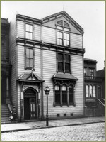
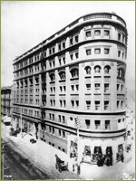
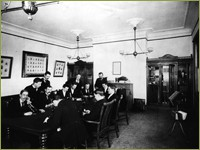
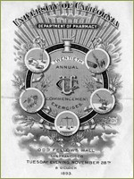

{% include nav.html %}
 The 1880s marked a period of growth and transition for all three affiliated colleges. The foremost feature of this change was the move towards more elaborate clinical and laboratory instruction. Although UC President Daniel Coit Gilman left for Baltimore in 1875, his legacy was reflected in the educational tone of the University of California’s affiliated colleges throughout the nineteenth century. Gilman had urged that medical training include “the habits of observation, manipulation, and reasoning,” and over the next two decades, the three affiliated colleges developed curriculum that gradually reduced the number of didactic lectures and stressed direct clinical experience. Laboratory instruction expanded as wet preparations and vivisection were added to the physiology courses, the use of surgical tools was demonstrated on cadavers, and quantitative and qualitative chemical analysis were taught in all three colleges. Dental, medical, and pharmacy students were given lectures on the principles of the microscope. Gradually the college faculties expanded beyond the original full professors and included a corps of assistants and demonstrators.
The 1880s marked a period of growth and transition for all three affiliated colleges. The foremost feature of this change was the move towards more elaborate clinical and laboratory instruction. Although UC President Daniel Coit Gilman left for Baltimore in 1875, his legacy was reflected in the educational tone of the University of California’s affiliated colleges throughout the nineteenth century. Gilman had urged that medical training include “the habits of observation, manipulation, and reasoning,” and over the next two decades, the three affiliated colleges developed curriculum that gradually reduced the number of didactic lectures and stressed direct clinical experience. Laboratory instruction expanded as wet preparations and vivisection were added to the physiology courses, the use of surgical tools was demonstrated on cadavers, and quantitative and qualitative chemical analysis were taught in all three colleges. Dental, medical, and pharmacy students were given lectures on the principles of the microscope. Gradually the college faculties expanded beyond the original full professors and included a corps of assistants and demonstrators.
Such profound changes in curriculum placed pressure upon the built environment of the colleges. Toland Medical building was the original center of instruction, providing “ample accommodations” for the College of Pharmacy from 1873 to 1876 and sharing space with Dentistry for its entire first decade. The Toland Medical College building contained a large lecture hall, clinical amphitheater, dissecting room, and laboratory space with chemicals and equipment “necessary for practical teaching.” Throughout the 1880s, much of the basic coursework for the dental students was nearly identical to that of medical students, including lectures in physiology, surgery, chemistry and materia medica, anatomy, and pathology, and, for dental students, emphasis on diseases and injuries of the head, face, jaws and mouth. Pathology for dental students was divided into General Pathology and the disease process, and Special Pathology, which included the causes of dental decay, dental hygiene and prophylaxis, diseases of the dentine and dentinal pulp, diseases of the mucous membranes, alveolar abscesses, and tumors, benign and malignant. Dental students took instruction in “Neuralgia and other nervous affections” and were invited to attend clinical lectures at the City and County Hospital. Medical and dental students shared the same commencement ceremony.
Despite their similarities in instructional program, the unique needs of dentistry inevitably put pressure on Toland Medical Building facilities. When the Dental Department was first founded in 1881, space at Toland was described as “beautifully situated, well ventilated and lighted, and admirably constructed and arranged for the work at hand.” Several rooms were set aside for dispensary work, and the faculty raised funds for the purchase of “five Morrison dental chairs, 5 Archer dental chairs, three S.S. White dental engines, 10 spittoons, turnkeys, forceps elevators and stools.” The laboratory requirements for dentistry instruction were unique to that profession, and the dental lab in Toland Medical Building was described in the mid 1880s as “commodius, furnished with benches, lathes, furnaces for melting, forge, rolling mill, continuous gum furnace and all other requisites for thorough work.” The Dental Department flourished in terms of numbers of students, size of the faculty, and scope of instruction. By the mid-1880s, over half of the dental curriculum involved direct clinical work or laboratory work, and the more dynamic the instruction became, the more space was required.
 An interesting feature of the expanded courses and admission requirements of the 1880s was the attempt to bolster the preparatory curriculum for all three departments. In 1884 the UC Academic Senate resolved that all that students of all three affiliated colleges “may have a free course of lectures at Berkeley” to include work in “Botany, comparative anatomy and physiology, organic and inorganic chemistry with laboratory work, microscopic technology and physiological and pathological histology, physics with laboratory work and free hand drawing.” The 1885 prospectus for the College of Dentistry praised: “this wise and liberal action of the Academic Senate,” which provided, “the opportunity…for those students of intellectual capacity and professional ambition to attain that technical knowledge and practical laboratory training and experience so necessary to the scientific investigation of the aetiology of disease.” This optional offering was directed at all the colleges and foreshadowed later upgrades in the requirements for pre-professional training in dentistry, medicine, and pharmacy.
An interesting feature of the expanded courses and admission requirements of the 1880s was the attempt to bolster the preparatory curriculum for all three departments. In 1884 the UC Academic Senate resolved that all that students of all three affiliated colleges “may have a free course of lectures at Berkeley” to include work in “Botany, comparative anatomy and physiology, organic and inorganic chemistry with laboratory work, microscopic technology and physiological and pathological histology, physics with laboratory work and free hand drawing.” The 1885 prospectus for the College of Dentistry praised: “this wise and liberal action of the Academic Senate,” which provided, “the opportunity…for those students of intellectual capacity and professional ambition to attain that technical knowledge and practical laboratory training and experience so necessary to the scientific investigation of the aetiology of disease.” This optional offering was directed at all the colleges and foreshadowed later upgrades in the requirements for pre-professional training in dentistry, medicine, and pharmacy.
The Donohoe Building facility was the site of the practical aspect of dentistry, as students learned to work with gold foil and vulcanized rubber dentures, utilizing an array of drills and tools. Throughout the 1890s, UC’s Dental Department was closely connected to San Francisco’s population through its large dispensary service, providing free dental care upon need.
By the 1890s, dentistry, medicine and pharmacy were vitally involved in incorporating the expanding content of laboratory science. Bacteriology, along with microscopic histology, urinalysis, salivary analysis, toxicology, and parasitology were added to the curriculum. By the turn of the century, white gowns, enameled furniture, scrubbable surfaces, and rubber gloves transformed the appearance of the hospital ward, operating room and dental office. The use of diphtheria antitoxin and other antiserum products were added to the pharmacopiea, and chemistry instruction was expanded in the College of Pharmacy.
>> Building the Parnassus Campus
1868–1898 The Origins of the University of California and Affiiated Colleges
Growth of the Affiliated Colleges
Closeup of Toland Medical Building; the three story City County Hospital is on the right. The hospital moved to its Portrero site in 1872, making clinical training more difficult for students who had to travel four miles for clinical sessions.
Such profound changes in curriculum placed pressure upon the built environment of the colleges. Toland Medical building was the original center of instruction, providing “ample accommodations” for the College of Pharmacy from 1873 to 1876 and sharing space with Dentistry for its entire first decade. The Toland Medical College building contained a large lecture hall, clinical amphitheater, dissecting room, and laboratory space with chemicals and equipment “necessary for practical teaching.” Throughout the 1880s, much of the basic coursework for the dental students was nearly identical to that of medical students, including lectures in physiology, surgery, chemistry and materia medica, anatomy, and pathology, and, for dental students, emphasis on diseases and injuries of the head, face, jaws and mouth. Pathology for dental students was divided into General Pathology and the disease process, and Special Pathology, which included the causes of dental decay, dental hygiene and prophylaxis, diseases of the dentine and dentinal pulp, diseases of the mucous membranes, alveolar abscesses, and tumors, benign and malignant. Dental students took instruction in “Neuralgia and other nervous affections” and were invited to attend clinical lectures at the City and County Hospital. Medical and dental students shared the same commencement ceremony.
Despite their similarities in instructional program, the unique needs of dentistry inevitably put pressure on Toland Medical Building facilities. When the Dental Department was first founded in 1881, space at Toland was described as “beautifully situated, well ventilated and lighted, and admirably constructed and arranged for the work at hand.” Several rooms were set aside for dispensary work, and the faculty raised funds for the purchase of “five Morrison dental chairs, 5 Archer dental chairs, three S.S. White dental engines, 10 spittoons, turnkeys, forceps elevators and stools.” The laboratory requirements for dentistry instruction were unique to that profession, and the dental lab in Toland Medical Building was described in the mid 1880s as “commodius, furnished with benches, lathes, furnaces for melting, forge, rolling mill, continuous gum furnace and all other requisites for thorough work.” The Dental Department flourished in terms of numbers of students, size of the faculty, and scope of instruction. By the mid-1880s, over half of the dental curriculum involved direct clinical work or laboratory work, and the more dynamic the instruction became, the more space was required.
Expanded Pharmacy Instruction at 113 Fulton Street
Pharmacy instruction became more elaborate as well. Toland Medical Building had been the site of pharmacy instruction for the first three years after the founding and affiliation of the California College of Pharmacy, but in 1876 pharmacy instruction moved to larger quarters in the California Academy of Sciences. Although the College of Pharmacy was affiliated with the University, it was governed by its own board of trustees. In 1883, desiring larger, more centrally located quarters, the trustees purchased a lot at 113 Fulton Street where they erected a three-story building designed exclusively for pharmacy instruction. In this new space, courses in chemistry, materia medica, botany, and theoretical and practical pharmacy were taught by a five-member faculty: William T. Wenzell, M.D., PhG, Professor of Chemistry, Hermann H. Behr, M.D., Professor of Botany, Frederick A Grazer, Ph.G., Professor of Materia Medica, and Edward W. Runyon, Ph.G, Dean and Professor of Pharmacy.

Throughout the 1880s, the college continued to upgrade its admissions requirements and course offerings. Previously, the completion of one year of high school or its equivalent was sufficient, but by the mid-1880s applicants needed to demonstrate skill in English reading and composition, geography and arithmetic through examination. Requirements for graduation included attendance of two full years of courses “in each of the [College of Pharmacy] departments,” plus four years of experience “in a pharmacy where prescriptions are compounded.” Candidates for the PharmG degree had to be at least 21 years old, “of good moral character,” and each student had to present an original thesis, “on some subject relating to Pharmacy or its collateral branches, or a chemical analysis conducted by himself.”
The California College of Pharmacy at 113 Fulton St.
Enhanced Curricula within the Affiliated Colleges
Reciprocity existed among the affiliated colleges. Pharmacy graduates were allowed to be examined for the MD in either the Medical Department of Cooper Medical College after attending medical school for two years instead of the otherwise required three. MD gradates, in turn were encouraged to pursue the PharmG degree after one year’s attendance of the two years course in the College of Pharmacy. Dental graduates with the D.D.S. were able to gain a year towards their MD degree by enrolling in the Medical Department. Many of the graduates and faculty of the nineteenth century held degrees in both Dentistry and Medicine.
Dental Clinics.
Dentistry Instruction at the Donohoe Building

In 1891, as the business center of San Francisco shifted away from the Stockton Street location of the Toland Medical Building, the Dental Department moved its clinical and mechanical instruction closer to downtown, occupying the entire fourth floor of the Donohoe Building on the corner of Market and Taylor. As dentistry’s facilities acquired rows of new chairs and drills, enrollment increased, and entering students encountered a thriving clinical setting.
The College of Dentistry was located in the top two floors of the Donohoe building.
The Donohoe Building facility was the site of the practical aspect of dentistry, as students learned to work with gold foil and vulcanized rubber dentures, utilizing an array of drills and tools. Throughout the 1890s, UC’s Dental Department was closely connected to San Francisco’s population through its large dispensary service, providing free dental care upon need.
The Basic Sciences and the Practice of Medicine

The 1890s brought epochal changes in the content of basic science. Since the 1870s, when Sir Joseph Lister introduced antiseptic surgery and Louis Pasteur disproved the theory of spontaneous generation and developed the rabies vaccine, a new science of bacteriology found its “golden age.” European bacteriologists developed rigorous techniques for isolating and identifying causative organisms, and isolated the organisms of anthrax (1876), tuberculosis (1882) cholera (1883), diphtheria (1884), typhoid (1884), Staphylcoccus (1884), tetanus (1884), Pneumococcus (1886), gas gangrene (1892), and plague (1894).
Dentistry students studying bacti, 1894

Bacteriology was gradually accepted into American medicine. In the late nineteenth century, the UC Medical Department retained basic science instruction in anatomy, physiology and pathology for medical and dental students at Toland Medical Building on the corner of Stockton and Francisco Streets. In an effort to modernize the curriculum, the Medical Department invited Professor George H. F. Nuttall of Johns Hopkins University to give a special course of lectures in bacteriology. In 1893 the faculty installed a new bacteriology lab containing a “complete apparatus” imported directly from Berlin.
College of Pharmacy graduation invitation featuring illustrated content of the fields of chemistry, materia medica, botany, and pharmacognosy.
By the 1890s, dentistry, medicine and pharmacy were vitally involved in incorporating the expanding content of laboratory science. Bacteriology, along with microscopic histology, urinalysis, salivary analysis, toxicology, and parasitology were added to the curriculum. By the turn of the century, white gowns, enameled furniture, scrubbable surfaces, and rubber gloves transformed the appearance of the hospital ward, operating room and dental office. The use of diphtheria antitoxin and other antiserum products were added to the pharmacopiea, and chemistry instruction was expanded in the College of Pharmacy.
>> Building the Parnassus Campus